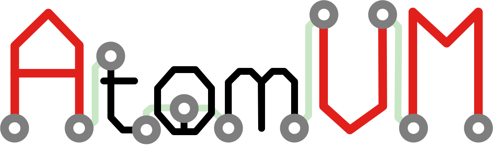

Welcome to
Welcome to AtomVM, the Erlang virtual machine for IoT devices!
AtomVM is a lightweight implementation of the the Bogdan Erlang Abstract Machine (_aka_, the BEAM), a virtual machine that can execute byte-code instructions compiled from Erlang or Elixir source code. AtomVM supports a limited but functional subset of the BEAM opcodes, and also includes a small subset of the Erlang/OTP standard libraries, all optimized to run on tiny micro-controllers. With AtomVM, you can write your IoT applications in a functional programming language, using a modern actor-based concurrency model, making them vastly easier to write and understand!
AtomVM includes many advanced features, including process spawning, monitoring, message passing, pre-emptive scheduling, and efficient garbage collection. It can also interface directly with peripherals and protocols supported on micro-controllers, such as GPIO, I2C, SPI, and UART. It also supports WiFi networking on devices that support it, such as the Espressif ESP32. All of this on a device that can cost as little as $2!
Warning
AtomVM is currently in v0.x stage. Software may contain bugs and should not be used for mission-critical applications. Application Programming Interfaces may change without warning.
Contents:
- Welcome to AtomVM!
- Release Notes
- Getting Started Guide
- AtomVM Tooling
- Programmers Guide
- Network Programming Guide
- Distributed Erlang
- Differences between AtomVM and BEAM
- Build Instructions
- AtomVM Internals
- Memory Management
- Packbeam Format
- API Reference Documentation
- Contributing
- AtomVM C Coding Style Guide (AVMCCS Guide)
- Changelog
- Unreleased
- [0.6.7] - Unreleased
- [0.6.6] - 2025-06-23
- [0.6.5] - 2024-10-15
- [0.6.4] - 2024-08-18
- [0.6.3] - 2024-07-20
- [0.6.2] - 25-05-2024
- [0.6.1] - 2024-04-17
- [0.6.0] - 2024-03-05
- [0.6.0-rc.0] - 2024-03-03
- [0.6.0-beta.1] - 2024-02-28
- [0.6.0-beta.0] - 2024-02-08
- [0.6.0-alpha.2] - 2023-12-10
- [0.6.0-alpha.1] - 2023-10-09
- [0.6.0-alpha.0] - 2023-08-13
- [0.5.1] - Unreleased
- [0.5.0] - 2022-03-22